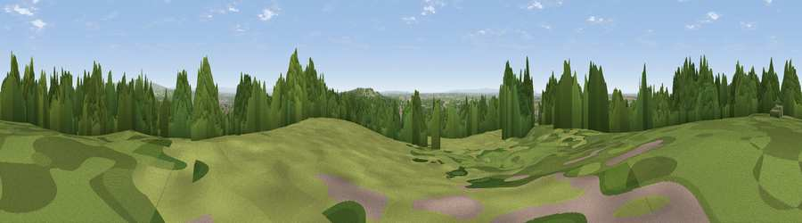

Viewpoint near Upholland
#33590 in England · top 73% of its area beats it · near UphollandWhere it is
The exact computed spot (SD 50875 06375). Click the marker for map links.
The view, rendered

A 360° render of this exact spot computed from the terrain model, tree cover and land cover — summer colours, afternoon light, calibrated against photographs of famous viewpoints. Real trees, hedges and buildings will differ in detail.
The panorama
Grey silhouette: terrain skyline in each direction (720 bearings, Earth curvature and refraction included). Dashed green: skyline with trees (+15 m) and buildings (+8 m) as obstacles. Blue strip: how far the ground is visible on each bearing.
Where the view opens
Wedge length = distance to the farthest visible ground on that bearing (vegetation-aware). Rings at 10, 25 and 50 km.
What fills the view
35% grassland · 35% woodland · 16% built-up · 13% cropland ·
Angular shares of the visible panorama (visual magnitude), not map area. Landscape diversity 0.58 (0–1 Shannon).
Key numbers
More beautiful places nearby
The staircase of upgrades: each row has a higher view potential than everything closer. Driving times are estimates from straight-line distance, calibrated against real road routing — check an actual route before setting out.
| Place | Direction | Drive | Score |
|---|---|---|---|
| Viewpoint near Upholland | WSW · 0 km | ~1 min | 58.3 |
| Viewpoint near Dalton | NNW · 2 km | ~5 min | 74.2 |
| Great Lawn | ENE · 15 km | ~27 min | 77.1 |
| Rivington Pike | ENE · 15 km | ~27 min | 81.9 |
| White Brow | ENE · 16 km | ~29 min | 82.9 |
| Warton Crag | N · 66 km | ~89 min | 83.2 |
| Viewpoint near Grange-over-Sands | N · 73 km | ~96 min | 83.4 |
| Viewpoint near Cartmel | NNW · 74 km | ~98 min | 87.0 |
53.55169, -2.74294 · source: screening · position refined by local search. Computed location — check access rights before visiting.